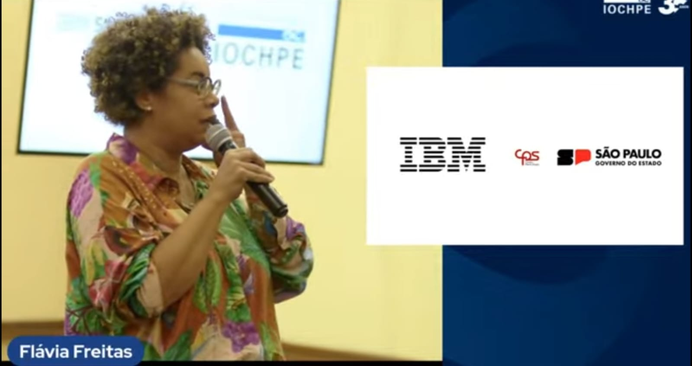
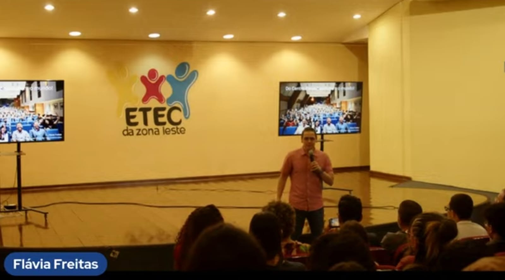

1º Ano
No nosso primeiro ano tivemos diversos conteúdos nos nossos encontros com as empresas Eduzz, Uno e Tegra. Tivemos encontros que abordavam diversos temas, como Comunicação Interpessoal, Objetivos da ONU, Ética e Valores, entre outros. Também tivemos nossa ida pela primeira vez à sede da empresa Eduzz, juntamente com a Uno Soluções.


2º Ano
Neste ano, novamente tivemos encontros com muito aprendizado, e também surgiu uma empresa parceira nova, a ITIX. Tivemos palestras com a ITIX como "Boas-vindas à ITIX" com a apresentação da trajetória profissional de Carlos Santos, e "Inteligência Artificial, redes sociais e regulamentação ética" com a palestrante Andréa Fieri. Nos foram passados também conteúdos como documentário sobre "O dilema das Redes", Desenvolvimento de plano de carreira em mapa mental, oficina de currículo, aula sobre como podemos usufruir do LinkedIn e cursos com certificados que contabilizam horas.


3º Ano
Neste ano, tivemos várias atividades enriquecedoras, contando com a participação de empresas parceiras de destaque e profissionais experientes que compartilharam conhecimento em temas essenciais para o desenvolvimento em TI. Em junho, tivemos um bate-papo com estagiários da ITIX e uma palestra sobre "Homelabs" com Edmilson, oferecendo uma visão prática sobre a construção de ambientes de desenvolvimento. Em julho, Luiz Milagres, da Eduzz, apresentou “Hacker do bem e a segurança digital no dia-a-dia”, abordando a importância da segurança digital. No mês de agosto, assistimos a palestras sobre organização pessoal com Vinícius e Michele, da Eduzz, e sobre o "Fluxo de Operações Comercial - Uno ERP", com André Lopes e Tamiris Marciano, da UNO. Em setembro, Guilherme Bastos, da TEGRA, trouxe tendências de TI com foco em IA generativa e outras tecnologias, e Liliane Pereira, da UNO, apresentou o tema “Autoconhecimento e Marca Pessoal”. Em outubro, além de uma palestra sobre "Desenvolvimento Low Code" com Guilherme Bastos, tivemos uma live com Flávia Freitas, da IBM, que discutiu o impacto das novas tecnologias no mercado de trabalho. Este ano também tivemos o início da parceria com a Fundação Iochpe, que trouxe novas oportunidades de aprendizado, como a palestra sobre tecnologia e mercado de trabalho e um curso de 40 horas com certificação.
 